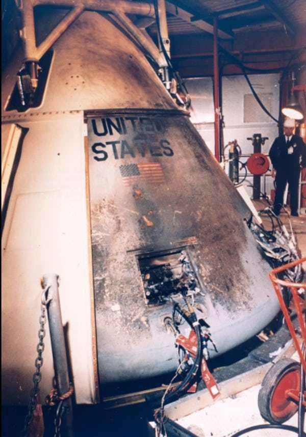
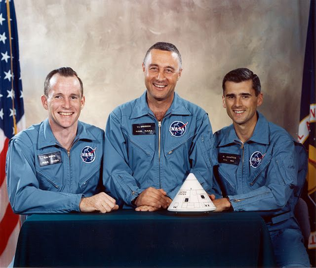

Apolo 1
27 de Enero de 1967
Primer misión de entrenamiento Apolo 1 el cual resultó en tragedia falleciendo asi tres astronautas. Gus Grissom (42 años) Edward White (36 años) Roger Chaffe (31 años)
